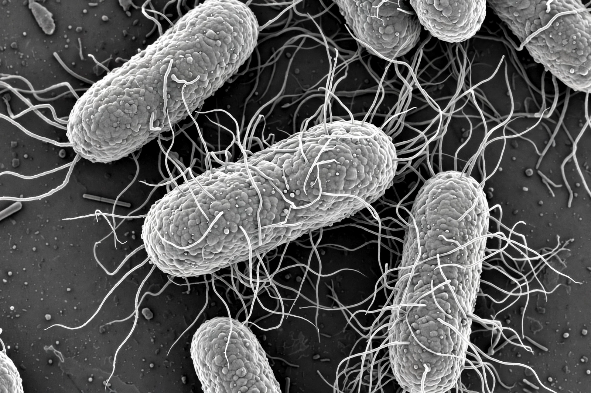

| Escherichia coli | |
|---|---|
| Domain | Bacteria |
| Phylum | Pseudomonadota |
| Family | Enterobacteriaceae |
| Genus | Escherichia |
| Discovered by | Theodor Escherich (1885) |

Escherichia coli (commonly abbreviated E. coli) is a Gram-negative, facultative anaerobic, rod-shaped, coliform bacterium of the genus Escherichia that is commonly found in the lower intestine of warm-blooded organisms. Most E. coli strains are harmless, but some serotypes, such as EPEC, ETEC and the Shiga toxin-producing O157:H7, can cause serious food poisoning in their hosts.
E. coli is a chemoheterotroph capable of growing on a variety of substrates; it can ferment sugars producing acid and gas. Under optimal conditions it can divide every 20 minutes. The bacterium normally colonises the human gut within hours of birth and forms part of the normal gut flora, helping to produce vitamin K and preventing colonisation by pathogens.
E. coli was one of the first organisms to have its genome sequenced (the K-12 strain, 1997) and is the most widely used model organism in microbiology and molecular biology. It is the workhorse of recombinant DNA technology, used to produce insulin, human growth hormone, enzymes and many research proteins.
Pathogenic strains can cause gastroenteritis, urinary tract infections, neonatal meningitis and haemolytic-uraemic syndrome. Outbreaks are typically traced to contaminated food or water.
See also: Coliform bacteria · Model organism · Food poisoning